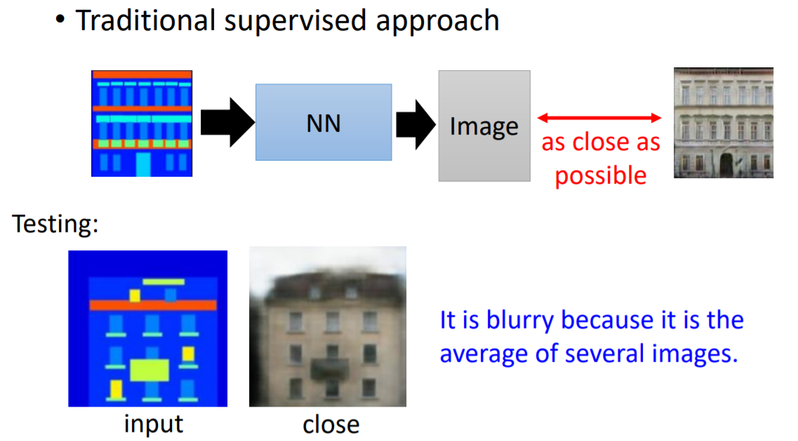

GAN
contribution
提出了可以让电脑进行“创造”的GAN网络。
method
The generative model can be thought of as analogous to a team of counterfeiters,trying to produce fake currency and use it without detection, while the discriminative model is analogous to the police, trying to detect the counterfeit currency.
如图所示，GAN包括了两个部分，即生成器 generator 与判别器 discriminator。生成器主要用来学习真实图像分布从而让自身生成的图像更加真实，以骗过判别器。判别器则需要对接收的图片进行真假判别。在整个过程中，生成器努力地让生成的图像更加真实，而判别器则努力地去识别出图像的真假，这个过程相当于一个二人博弈，随着时间的推移，生成器和判别器在不断地进行对抗，最终两个网络达到了一个动态均衡：生成器生成的图像接近于真实图像分布，而判别器识别不出真假图像，对于给定图像的预测为真的概率基本接近 0.5（相当于随机猜测类别）。
loss
V(D,G) 作为模型的loss函数，其中对于D网络，为了增强其对于真伪图片的分辨能力，因此应当 max V(D,G) ，对于G模型，为了使其生成的图片与真实图片之间的差距尽可能的小，因此应当 min V(D,G) 。
tranining
在模型训练过程中，先在数据集中选取 batch_size 个图片 x ，同时随机生成 batch_size 个噪声 z 。随后将 z 传入generator模型，生成 batch_size 个虚假的生成图片 G(z) ，随后将 x 与 G(z) 传入discriminator模型进行真伪判别并进行反向传播更新模型参数。
k 次更新后，再对generator模型进行参数更新。注意这是为了使得G模型更新速率维持在一个较慢的水平，同时防止D模型在有限的数据集上发生过拟合现象。
如图所示，图中黑色点线表示真实的数据分布，表示在真实数据集中图片质量为以均值为中心的高斯分布，绿色曲线表示随机噪音z在经过G模型后的G(z)数据分布，可以看出在GAN网络的训练过程中,在最开始的时候，随机噪声z经过G模型后映射到x空间，但因为G模型的权重未经过训练，因此生成的多为较为粗糙的图片。蓝色虚线表示D模型的分布，可以看出D模型在训练初期，虽然自身分辨能力也很弱，但因为G模型生成图片过于粗糙，因此可以较好地辨别真伪，但在训练后期，当G模型已经能生成较为逼真的图片后，D模型对于图片真伪的判别概率趋紧0.5。
advantage
1.GAN是一种生成式模型，相比较其他生成模型（玻尔兹曼机和GSNs）只用到了反向传播,而不需要复杂的马尔科夫链
2.相比其他所有模型,GAN可以产生更加清晰，真实的样本,因为在其他有监督学习的图片生成模型中，一个输入对应多个输出，因此最终输出结果为多个可能的均值，造成最终输出较为模糊。
3.GAN采用的是一种无监督的学习方式训练，可以被广泛用在无监督学习和半监督学习领域，在之后的论文DCGAN中，便将GAN网络中的D模型作为特征提取部分进行无监督学习。
4.相比于变分自编码器, GAN没有引入任何决定性偏置( deterministic bias),变分方法引入决定性偏置,因为他们优化对数似然的下界,而不是似然度本身,这看起来导致了VAEs生成的实例比GANs更模糊
5.相比VAE,GANs没有变分下界,如果鉴别器训练良好,那么生成器可以完美的学习到训练样本的分布.换句话说,GANs是渐进一致的,但是VAE是有偏差的
6.GAN应用较为简单，例如应用到一些场景上，比如图片风格迁移，超分辨率，图像补全，去噪，避免了损失函数设计的困难，只需对抗训练便可得到较好的结果。
disadvantage
1.如图所示， log(1-D(x)) 是我们计算时 G 的 loss function，但是我们发现，在 D(x) 接近于 0 的时候，这个函数十分平滑，梯度非常的小。这就会导致，在训练的初期，G 想要骗过 D，变化十分的缓慢，而上面的函数，趋势和下面的是一样的，都是递减的。但是它的优势是在 D(x) 接近 0 的时候，梯度很大，有利于训练，在 D(x) 越来越大之后，梯度减小，这也很符合实际，在初期应该训练速度更快，到后期速度减慢。
2.GAN不适合处理离散形式的数据，比如文本
3.GAN存在训练不稳定、梯度消失、模式崩溃的问题
DGAN
contribution
1.用CNN来替代GAN中的多层感知机
2.利用GAN网络对抗训练后的D模型进行特征提取并应用到无监督分类任务
3.将GAN中的卷积核可视化
method
model
1.将pooling层convolutions替代，其中，在discriminator上用stridedconvolutions替代，在generator上用fractional-strided convolutions替代
2.在generator和discriminator上都使用batchnorm，防止generator把所有的样本都收敛到同一个点，直接将BN应用到所有层会导致样本震荡和模型不稳定，通过在generator输出层和discriminator输入层不采用BN可以防止这种现象。
3.移除全连接层，global pooling增加了模型的稳定性，但伤害了收敛速度。
4.在generator的除了输出层外的所有层使用ReLU，输出层采用tanh。
5.在discriminator的所有层上使用LeakyReLU。
其中DCGAN的G模型结构如上图所示，这里的conv层是fractionally-strided convolution，其作用是在改变feature map的通道数的同时，扩大feature map的分辨率。具体操作方式如下图所示：
无监督分类任务
利用GAN网络在1000个数据集上对抗训练后的D模型进行特征提取并应用到无监督分类任务,在CIFAR-10上测试所得结果如下图所示：
可以看出，在较少的feature map的限制下，DCGAN+L2-SVM仍有较好的表现。
同时可以看出在此处仍将D模型作为单一的特征提取工具，而无法在新的数据集上进行无监督的适应性的训练，因此仍有一定的局限性，在FAIR 2018ECCV的论文Deep Clustering for Unsupervised Learning of Visual Features中提出了利用深度学习的无监督分类模型，可以借鉴以提高在无监督分类任务上的表现。
漫游隐空间
如图所示，作者随机生成9个噪音 z 后，对其进行微调后发现生成图片有逐渐地转换，例如第6行逐渐出现了窗口。
本文中我觉得比较有意思的部分是，作者试图在将GAN网络通过随机噪音生成的图片进行控制。
作者首先将数据集中带有窗户的图片中的窗口部分标注出来，随后在G模型的倒数第二层加入一个判别层来对像素点判别是否在窗口范围，如果是就将这特征图舍弃，因此最终生成的是没有窗口的图片。
如下图中第1行中所示，是没有移除窗口特征图所生成的图片，第2行为移除可窗口特征图所生成的图片，可以看出第一行中有窗户而第二行没有，效果较为明显。
卷积核可视化
如图所示，右侧训练过后的D模型卷积核对卧室中的床相应比较明显，相对于左侧的随机卷积核更能够提取卧室的特点。
向量结构
如下图所示，类似word2vec的思想，将最初始的 z 与最后G模型生成的图片进行对应，因此$ z $向量的加减导致图像的修改。值得注意的是为了使结果稳定，向量的输入均是取三个类似图片对应向量的平均。
advantage
1.将Conv应用到GAN网络中，大大提高了GAN网络的表现力
2.尝试对隐空间进行解析，并进行了一些实验
3.将GAN网络利用到传统的无监督学习分类任务，并取得一定的效果
disadvantage
1.对隐空间的理解仍处于比较初级的阶段，并且无法达到对结果预先的控制
2.G模型较为简单，难以生成分辨率较大的清晰图像
CGAN
contribution
在生成模型（D）和判别模型（G）的建模中均引入条件变量y（conditional variable y），将无监督GAN变成有监督的CGAN，对生成结果进行控制。
method
与其他生成式模型相比，GAN这种竞争的方式不再要求一个假设的数据分布，即不需要formulate p(x)，而是使用一种分布直接进行采样sampling，从而真正达到理论上可以完全逼近真实数据，这也是GAN最大的优势。然而，这种不需要预先建模的方法缺点是太过自由了，对于较大的图片，较多的 pixel的情形，基于简单 GAN 的方式就不太可控了。为了解决GAN太过自由这个问题，一个很自然的想法是给GAN加一些约束，于是便有了CGAN。
这项工作提出了一种带条件约束的GAN，在生成模型（D）和判别模型（G）的建模中均引入条件变量y（conditional variable y），使用额外信息y对模型增加条件，可以指导数据生成过程。这些条件变量y可以基于多种信息，例如类别标签，用于图像修复的部分数据，来自不同模态（modality）的数据。如果条件变量y是类别标签，可以看做CGAN 是把纯无监督的 GAN 变成有监督的模型的一种改进。
model
如下图所示，在传统GAN的基础上，生成器和判别器都增加额外信息 y为条件, y 可以使任意信息,例如类别信息,或者其他模态的数据。通过将额外信息 y 输送给判别模型和生成模型,作为输入层的一部分,从而实现条件GAN。在生成模型中,先验输入噪声 p(z) 和条件信息 y 联合组成了联合隐层表征。对抗训练框架在隐层表征的组成方式方面相当地灵活。类似地，CGAN 的目标函数是带有条件概率的二人极小极大值博弈（two-player minimax game ）
loss
与传统GAN不同，在判别器进行真伪判别的同时，也会对图片对标签进行判别，因此使得G模型在尽可能地生成更加逼真的图片的同时，尽可能地也生成与输入条件变量 y 尽可能匹配的图片。由此实现了对GAN生成图片的控制。
传统img2img方法因为在训练集中存在一对多的对应关系，因此在最终输出的时候模型汇总和考虑多种可能输出的结果，最终选取他们的平均作为最终输出，因此导致最终输出图片较为模糊。
而CGAN因为输出而除了条件变量 y （img）以外仍有随机噪音 z ，因此能够避免这种局限性。

training
每行的CGAN按照相同的条件变量 y 值生成相同的数字，整体实验效果较为明显：
advantage
1.对GAN网络添加约束，可以按照预期生成相应得图片。
2.尝试了文字标签与图片的跨模态转换，并取得一定的实验效果
disadvantage
1.有监督学习需要大量的标签，如果继续将模型复杂化则需要更大的数据集与更多的标签来训练网络，因此会大大提高模型训练的成本
Info_GAN
contribution
让GAN网络通过无监督学习学习到了可解释的特征表示
method
在传统GAN网络的G模型与D模型的基础上，info_gan增加了一个Q模型，其与D模型共享权重，但在最后FC层的时候有所不同: D模型负责判别图片的真伪，而Q模型负责输出c值与先前输入的latent code c 值相对应
latent code
既然原始的噪声是杂乱无章的，那就人为地加上一些限制，于是作者把原来的噪声输入分解成两部分：一是原来的z；二是由若干个latent variables拼接而成的latent code c，这些latent variables会有一个先验的概率分布，且可以是离散的或连续的，用于代表生成数据的不同特征维度，比如MNIST实验的latent variables就可以由一个取值范围为0-9的离散随机变量（用于表示数字）和两个连续的随机变量（分别用于表示倾斜度和粗细度）构成。
但仅有这个设定还不够，因为GAN中Generator的学习具有很高的自由度，很容易将latent code作为噪音z的一部分而使其失去表达能力。
mutual information
作者从信息论中得到启发，提出了基于互信息（mutual information）的正则化项。c的作用是对生成数据的分布施加影响，于是需要对这两者的关系建模，在信息论中，互信息I(X;Y)用来衡量“已知Y的情况下可获取多少有关X的信息”，公式如下所示：
$$
I(X ; Y)=H(X)-H(X | Y)=H(Y)-H(Y | X)
$$
因此在加入互信息的概念之后，作者为了让先前的latent code与生成图片尽可能地关联，因此修改loss函数，如下所示：
$$
\min _{G} \max _{D} V_{I}(D, G)=V(D, G)-\lambda I(c ; G(z, c))
$$
在训练过程中，传统GAN因为没有互信息的约束，这个增加的c和一般的噪声z并没有太多区别，为能学到隐含的信息。而infogan则在训练过程中逐渐学习到相应的信息
experiment
作者在实验部分，选用了mnist数据集，对于latent code，作者设定了一个one-hot类型的离散值（0-9），同时还设置了两个位于-1到1之间的连续值进行训练，在随后的结果中可以发现，离散值对应mnist数据集中0-9的数字类别，两个离散值则对应着数字的粗细与倾斜程度。最终结果如下图所示。
advantage
1.使GAN网络通过无监督学习学习到隐含的信息
2.将信息论中的理论引入GAN网络的搭建中，加强了latent code与生成图片之间的联系
disadvantage
1.在训练结果出来之前无法提前预知提前设置的latent code所对应的意义是什么，因此有可能无监督学习到没意义的信心
Dual_GAN
contribution
在没有标签数据的前提下，实现在两个不同的域之间的图像转换。
method
DualGAN将基本的 GAN 再进一步扩展为两个相互耦合的的 GAN，其中存在着两个生成器和两个判别器。其中第一个生成器 G_a 可以将素描（U）翻译为照片（V）， G_a 所完成的任务正是我们最终想要完成的目的，与这个生成器对应的有一个判别器 D_a 。与此同时，构建与之对偶的另一个生成器 G_b ，将照片转换为素描，与这个生成器所对应的同样有一个判别器 D_b 。
G
通过生成器$G_A可以对素描图片 u 进行翻译，最终得到类似照片的图片，其中包含的噪声为 z，翻译的结果即为G_{A}(u, z)，把这个翻译的结果扔给另一个专门用于生成素描图片的生成器 $G_{B}$，得到的结果
$$
G_{B}\left(G_{A}(u, z), z^{\prime}\right)
$$
即为对原有的素描图片的一次重构，这里的 z’ 同样是噪声。接下来考虑与这一过程对偶的一个过程，首先将照片 v 用生成器 G_b 翻译为素描图
$$
G_{B}\left(v, z^{\prime}\right)
$$
，然后再用生成器G_{A}对生成的素描图进行翻译，得到
$$
G_{A}\left(G_{B}\left(v, z^{\prime}\right), z\right)
$$
D
与生成器 G_A 对应的判别器 D_A 判断一张图片是否像一张照片，而与生成器 G_B 对应的判别器 D_B 则判断一张图片是否像一张素描图。对应于上面提到的对偶的生成过程，系统最终希望最小化重构误差，即希望最小化在两次迭代后得到的结果与原始图片之间的误差
$$
\left|G_{A}\left(G_{B}\left(v, z^{\prime}\right), z\right)-v\right|
$$
和
$$
\left|G_{B}\left(G_{A}(u, z), z^{\prime}\right)-u\right|
$$
experiment & result
advantage
1.通过无监督学习实现了两个不同的域之间的图片转换
disadvantage
1.生成图片分辨率限制
Cycle_GAN
contribution
与Dual_GAN相似，实现在两个不同的域之间的图像转换。
method
cycle_gan与dual_gan基本原理相似，唯一不同点在于dual_gan中G模型的输入为 G_{A}(u, z) ，而cycle_gan中G模型的输入为 G_{A}(u)，舍弃了随机噪音 z 。
因此相比于传统GAN中的G模型，cycle_gan中的G模型更多的类似于encoder/decoder模型。